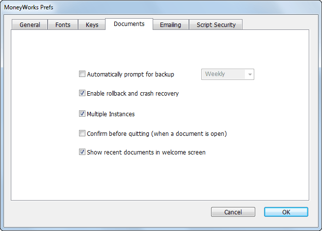

MoneyWorks Manual
Documents

Automatically Prompt for Backup: Use this to set the frequency of how-often MoneyWorks will prompt you to back up your document upon exit. You can set it to Daily, Weekly or Monthly.
Enable Rollback and Crash Recovery: If set, MoneyWorks will maintain a session file of all changes to the file. In the event of MoneyWorks not being closed properly (for example a system crash or a power failure), the session file will contain details of all items entered and operations done since the last save. These can then be restored into the current document. Any operation that you were part way through at the time of the close will be lost. You cannot turn this off from a client, and it is always on in Datacentre.
Note: If you plan to import a lot of information, turning this option off for the duration of the import will make it go about 100 times faster.
If a session file has been created and there is a system crash, MoneyWorks will display the following next time you open the document:

Restore Work: Click this to restore the session information—upon completion of the restore MoneyWorks will save your document.
Don’t Open: Click this if you don’t want to open your document—the session file will remain intact until you next attempt to open your document.
Discard Session: Click this if you want open MoneyWorks discarding the session file. Your document will be opened as it was when last saved.
Warning: Avoid updating MoneyWorks until after you have restored the session file—these are not necessarily compatible across versions.
Multiple Instances: If set, a new instance of MoneyWorks will start when you double-click a MoneyWorks document or open one under the File menu. This was the default behaviour in Windows prior to MoneyWorks 6. If the option is off, the current MoneyWorks file will be closed before the new file is opened.
Note: If you have external scripts running and more than one instance of MoneyWorks running, it is not possible to direct communication from the script to a particular instance.
Confirm before Quitting (windows only) If set you will be asked if you really do want to Quit Moneyworks if you close the frame window.
Show recent documents in Welcome screen If set, a list of recently opened MoneyWorks files and (for Gold and Datacentre) connections to MoneyWorks clients will be displayed in the MoneyWorks Welcome screen.